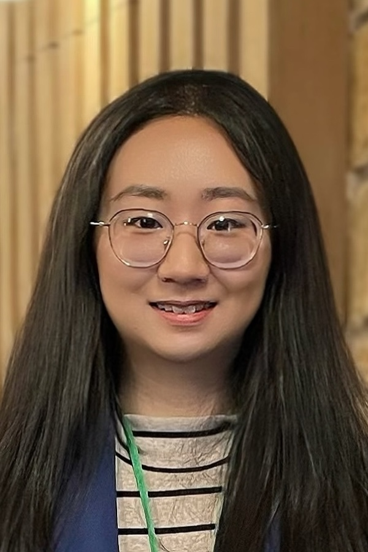
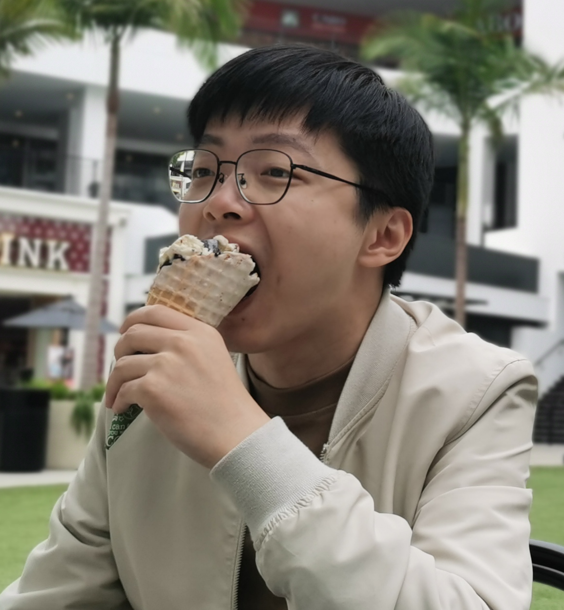
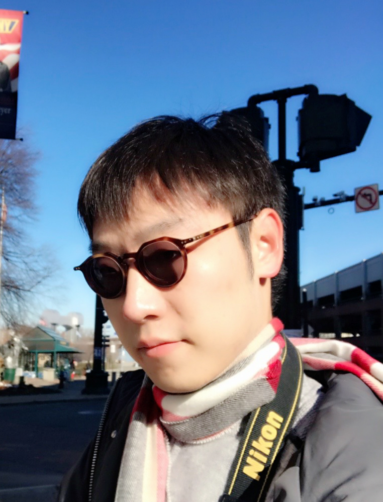

People

Heshan Fernando 2021 Summer - present Ph.D. Rensselaer Polytechnic Institute (RPI) B.S. University of Moratuwa, Sri Lanka

Jindan Li 2025 Fall - present Ph.D. Cornell University Ph.D. Student at RPI (2024-2025) B.S. Zhejiang University, Hangzhou, China

Quan Xiao 2025 Fall - present Ph.D. Cornell University Ph.D. Student at RPI (2021-2025) B.S. University of Science and Technology of China, Hefei, China
Zhaoxian Wu 2025 Fall - present Ph.D. Cornell University Ph.D. Student at RPI (2023-2025) M.S. Sun Yat-sen University B.S. Sun Yat-sen University, Guangzhou, China
Lisha Chen 2021 Summer - 2025 Spring Ph.D. Rensselaer Polytechnic Institute (RPI) B.S. Huazhong University of Science and Technology, China Position: AP at U of Rochester

Han Shen 2020 Spring - 2024 Fall Ph.D. Rensselaer Polytechnic Institute (RPI) B.S. Shanghai University, China Position: Researcher at Ant Group
Liuyuan Jiang 2023 Fall - 2025 Spring Transfer to UR with Lisha Chen M.S. Cornell University B.S. Xi'an Jiaotong-Liverpool U.
A F M Saif 2023 Fall - 2025 Spring M.S. RPI B.S. Bangladesh University of Engineering and Technology
Momin Abbas 2021 Spring - 2024 Spring M.S. RPI B.S. National Uni. of Sciences and Technology, Pakistan Position: Researcher at IBM Research

Xiao Jin 2019 Fall - 2021 Fall M.S. RPI B.S. Fudan University, China Position: Columbia University
Xuefei Li 2021 Fall - 2023 Spring M.S. RPI B.S. Fudan University, China Position: Software Engineer at Visa
Ziye Guo 2019 Fall - 2021 Spring M.S. RPI B.S. Beijing Uni. of Posts and Telecomm., China